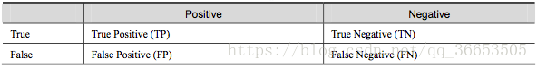
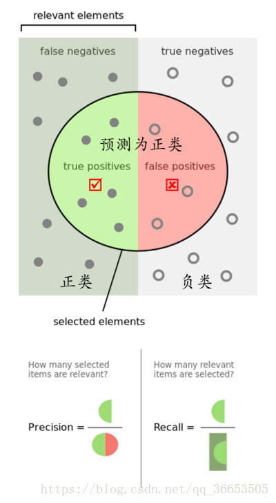
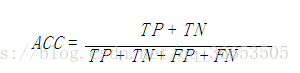
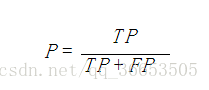
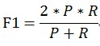
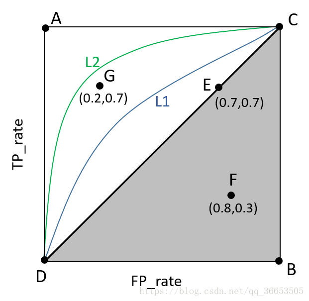
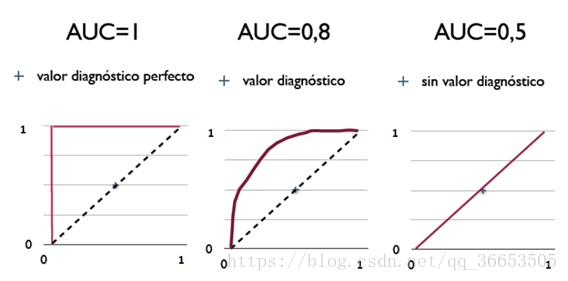
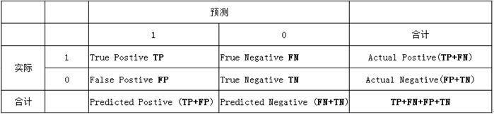
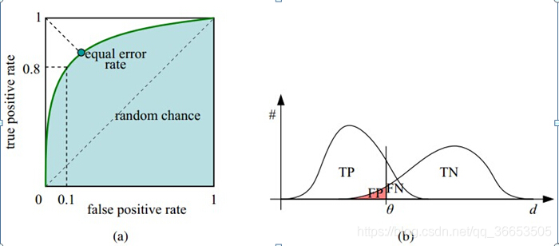

机器学习的评价指标：准确率(Precision)、召回率(Recall)、F值(F-Measure)、ROC曲线等_Never-Giveup的博客-CSDN博客_机器学习准确率¶
在介绍指标前必须先了解“混淆矩阵”：
混淆矩阵
True Positive(真正，TP)：将正类预测为正类数
True Negative(真负，TN)：将负类预测为负类数
False Positive(假正，FP)：将负类预测为正类数误报 (Type I error)
False Negative(假负，FN)：将正类预测为负类数→漏报 (Type II error)


准确率(accuracy)计算公式为：

注： 准确率是我们最常见的评价指标，而且很容易理解，就是被分对的样本数除以所有的样本数，通常来说，正确率越高，分类器越好。 准确率确实是一个很好很直观的评价指标，但是有时候准确率高并不能代表一个算法就好。比如某个地区某天地震的预测，假设我们有一堆的特征作为地震分类的属性，类别只有两个：0：不发生地震、1：发生地震。一个不加思考的分类器，对每一个测试用例都将类别划分为0，那那么它就可能达到99%的准确率，但真的地震来临时，这个分类器毫无察觉，这个分类带来的损失是巨大的。为什么99%的准确率的分类器却不是我们想要的，因为这里数据分布不均衡，类别1的数据太少，完全错分类别1依然可以达到很高的准确率却忽视了我们关注的东西。再举个例子说明下。在正负样本不平衡的情况下，准确率这个评价指标有很大的缺陷。比如在互联网广告里面，点击的数量是很少的，一般只有千分之几，如果用acc，即使全部预测成负类（不点击）acc也有 99% 以上，没有意义。因此，单纯靠准确率来评价一个算法模型是远远不够科学全面的
精确率(precision)定义为：

精确率 是针对我们预测结果而言的，它表示的是预测为正的样本中有多少是对的。那么预测为正就有两种可能了，一种就是把正类预测为正类(TP)，另一种就是把负类预测为正类(FP)。
召回率 是针对我们原来的样本而言的，它表示的是样本中的正例有多少被预测正确了。那也有两种可能，一种是把原来的正类预测成正类(TP)，另一种就是把原来的正类预测为负类(FN)
召回率是覆盖面的度量，度量有多个正例被分为正例，recall=TP/(TP+FN)。
P和R指标有时候会出现的矛盾的情况，这样就需要综合考虑他们，最常见的方法就是F-Measure（又称为F-Score）。 F-Measure是Precision和Recall加权调和平均：

ROC（Receiver Operating Characteristic）曲线是以假正率（FP_rate）和真正率（TP_rate）为轴的曲线，ROC曲线下面的面积我们叫做AUC，如下图所示：

其中：
（1）曲线与FP_rate轴围成的面积（记作AUC）越大，说明性能越好，即图上L2曲线对应的性能优于曲线L1对应的性能。即：曲线越靠近A点（左上方）性能越好，曲线越靠近B点（右下方）曲线性能越差。
（2）A点是最完美的performance点，B处是性能最差点。
（3）位于C-D线上的点说明算法性能和random猜测是一样的–如C、D、E点。位于C-D之上（即曲线位于白色的三角形内）说明算法性能优于随机猜测–如G点，位于C-D之下（即曲线位于灰色的三角形内）说明算法性能差于随机猜测–如F点。
（4） 虽然ROC曲线相比较于Precision和Recall等衡量指标更加合理，但是其在高不平衡数据条件下的的表现仍然过于理想，不能够很好的展示实际情况。
AUC（Area Under Curve）被定义为ROC曲线下的面积，显然这个面积的数值不会大于1。
简单说：AUC值越大的分类器，正确率越高
- 完美分类器，采用这个预测模型时，不管设定什么阈值都能得出完美预测。绝大多数预测的场合，不存在完美分类器。
- 优于随机猜测。这个分类器（模型）妥善设定阈值的话，能有预测价值。
- 跟随机猜测一样（例：丢铜板），模型没有预测价值。
- 比随机猜测还差；但只要总是反预测而行，就优于随机猜测，因此不存在 的情况。

既然已经这么多评价标准，为什么还要使用ROC和AUC呢？因为ROC曲线有个很好的特性：当测试集中的正负样本的分布变化的时候，ROC曲线能够保持不变。在实际的数据集中经常会出现类不平衡（class imbalance）现象，即负样本比正样本多很多（或者相反）
再谈ROC和AUC¶
一 、roc曲线¶
1、roc曲线：接收者操作特征(receiveroperating characteristic),roc曲线上每个点反映着对同一信号刺激的感受性。
横轴：假正类率(false postive rate FPR)特异度，划分实例中所有负例占所有负例的比例；(1-Specificity)
纵轴：真正类率(true postive rate TPR)灵敏度，Sensitivity(正类覆盖率)
2、针对一个二分类问题，将实例分成正类(postive)或者负类(negative)。但是实际中分类时，会出现四种情况.
(1)若一个实例是正类并且被预测为正类，即为真正类(True Postive TP)
(2)若一个实例是正类，但是被预测成为负类，即为假负类(False Negative FN)
(3)若一个实例是负类，但是被预测成为正类，即为假正类(False Postive FP)
(4)若一个实例是负类，但是被预测成为负类，即为真负类(True Negative TN)
TP:正确的肯定数目
FN:漏报，没有找到正确匹配的数目
FP:误报，没有的匹配不正确
TN:正确拒绝的非匹配数目
列联表如下，1代表正类，0代表负类：

由上表可得出横，纵轴的计算公式：
(1)真正类率(True Postive Rate)TPR: TP/(TP+FN),代表分类器预测的正类中实际正实例占所有正实例的比例。Sensitivity
(2)假正类率(False Postive Rate)FPR: FP/(FP+TN)，代表分类器预测的正类中实际负实例占所有负实例的比例。1-Specificity
(3)真负类率(True Negative Rate)TNR: TN/(FP+TN),代表分类器预测的负类中实际负实例占所有负实例的比例，TNR=1-FPR。Specificity
假设采用逻辑回归分类器，其给出针对每个实例为正类的概率，那么通过设定一个阈值如0.6，概率大于等于0.6的为正类，小于0.6的为负类。对应的就可以算出一组(FPR,TPR),在平面中得到对应坐标点。随着阈值的逐渐减小，越来越多的实例被划分为正类，但是这些正类中同样也掺杂着真正的负实例，即TPR和FPR会同时增大。阈值最大时，对应坐标点为(0,0),阈值最小时，对应坐标点(1,1)。
如下面这幅图，(a)图中实线为ROC曲线，线上每个点对应一个阈值。

横轴FPR:1-TNR,1-Specificity，FPR越大，预测正类中实际负类越多。
纵轴TPR：Sensitivity(正类覆盖率),TPR越大，预测正类中实际正类越多。
理想目标：TPR=1，FPR=0,即图中(0,1)点，故ROC曲线越靠拢(0,1)点，越偏离45度对角线越好，Sensitivity、Specificity越大效果越好。